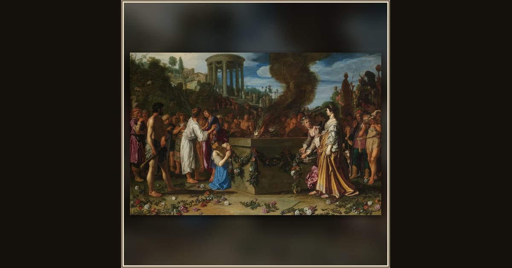

Orestes and Pylades Disputing at the Altar
Pieter Lastman · 1614 · rijksmuseum
Two men face one another beside a garlanded altar, with a woman across it. Orestes refuses to let Pylades die in his place (598–602). Explore its place in Euripides's Plays, Iphigenia in Tauris, line 595.